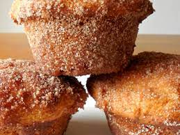

Donut Muffins

Description
Nicknamed the "Donut Muffin" because of their remarkable resemblance to donuts, these muffins are simply delicious with their cinnamon sugar and nutmeg taste combination.
Ingredients
- ½ cup white sugar
- ¼ cup margarine, melted
- ¾ teaspoon ground nutmeg
- ½ cup milk
- 1 cup all-purpose flour
- 1 teaspoon baking powder
Ingredients after baking
- ¼ cup margarine, melted
- ½ cup white sugar
- 1 teaspoon ground cinnamon
Steps
- Preheat the oven to 375 degrees F (190 degrees C). Grease a 24-cup mini muffin tin
- Make the muffins: Mix sugar, margarine, and nutmeg together in a large bowl. Stir in milk, then mix in flour and baking powder until just combined. Spoon batter into the prepared muffin cups, filling each 1/2 full
- Bake in the preheated oven until the tops are light golden brown, 15 to 20 minutes. Remove from the oven and transfer to a wire rack
- Immediately place melted margarine in a bowl, and mix sugar and cinnamon together in another bowl
- Dip the top of each warm muffin in melted margarine, then dip in sugar mixture to coat. Let cool for 10 minutes before serving